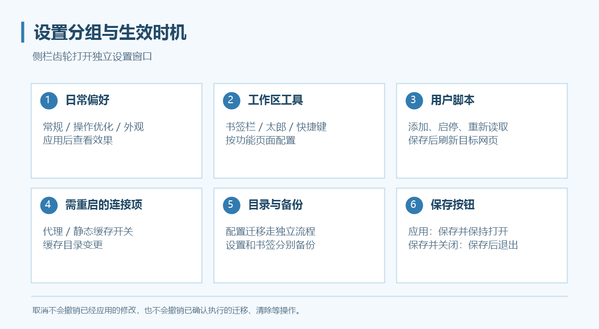

设置
点击侧栏齿轮打开独立设置窗口，使用左侧导航跳到相应分组。

保存与生效
- 应用：保存当前修改，设置窗口继续打开。
- 保存并关闭：保存修改并关闭设置窗口。
- 取消：不应用尚未保存的普通表单修改；已经应用的修改、已确认执行的迁移／清除操作不会被撤销。
目录迁移、备份还原与清除按钮有独立操作流程。按确认框提示执行，不要把关闭设置窗口理解为撤销这些操作。
| 修改类型 | 如何生效 |
|---|---|
| 常规、外观、书签栏、快捷键 | 保存／应用后生效 |
| 用户脚本 | 保存后在新页面生效，刷新或重新导航 |
| 内存热缓存、预拉取、预热、后台暂停 | 应用后生效 |
| 代理、静态缓存开关、缓存目录 | 重启后生效 |
| 用户配置目录切换／迁移 | 使用独立流程，退出并重新打开程序 |
| 还原用户配置／书签 | 按提示重启后完整生效 |
常规
界面语言：简体中文、繁体中文、英语、日语。只改变应用界面，不改变游戏网页的语言与字体；部分翻译可能存在不准确之处。
主页地址：导航区主页按钮的目标，默认是 https://game.granbluefantasy.jp/#mypage。与速达网址分别保存。
操作优化
“启用网页右键菜单”和“允许拖拽图片等网页元素”默认关闭，按需求开启。若右键已绑定快捷功能，浏览器区域会优先执行快捷功能。
太郎原生打开侧栏／窗口的右键入口已隐藏，请使用 Grancypher 工具区太郎入口。开启右键菜单不等于恢复这些入口。
连接
系统代理、直连、手动代理、PAC。保存后重启，详细步骤见代理设置。
外观
| 项目 | 说明 |
|---|---|
| 窗口透明度 | 调整浏览器与弹出窗口透明度，独立设置窗口不受影响 |
| 高分辨率优化 | 默认开启，按系统 DPI 调整独立窗口尺寸，不改变游戏网页缩放 |
| 页面加载时自动裁剪 | 默认开启；关闭后仍处理 Mobage 条、Size 变化和手动适配 |
| 附属面板自动换边 | 默认开启，屏幕边缘空间不足时调整太郎／吸附悬浮书签的侧别 |
| 侧边菜单栏 | 可选左侧或右侧 |
| 侧栏宽度 | 28–68 px，默认 34 px；按钮与聚合书签一起缩放 |
| 颜色模式 | 亮色、暗色或跟随系统 |
| 强调色 | 七色预设或自定义；亮暗模式共用所选强调色 |
| 窗口材质 | 纯色、Mica、Mica Alt、亚克力，可调材质效果 |
| 未激活时保持材质 | 默认关闭；开启后仍受系统透明效果、省电与硬件条件限制 |
关闭附属面板自动换边后，会保持吸附侧和宽度；屏幕边缘可能遮住部分面板。材质看不出效果时先检查系统透明效果与所选材质，不要反复清除浏览器数据。
书签栏、太郎、用户脚本与快捷键
数据与缓存
用户配置目录保存设置与 Cookies；缓存目录可跨配置共用。不要把二者设为同一个目录或互相包含的目录。
配置迁移和删除的注意事项见多用户配置。静态缓存、统计、后台下载与清理见本地缓存。
分别备份设置与书签
- 点击“备份用户配置…”，选择文件保存位置。
- 再点击“备份书签…”，单独保存书签文件。
- 在目标配置使用对应的还原按钮，核对文件并按提示重启。
用户配置备份不包含 Cookies、书签与保存路径。还原用户配置覆盖当前账户设置，保留当前目录、书签与登录资料。插件、脚本和本地图标的外部文件不等于已被复制，换机后需核对路径。
Debug 模式
Debug 入口在主窗口工具区 → 更多菜单，开启后跨重启持续记录。重现问题后手动关闭，再按提示打开日志或所在目录。
日志位置为当前配置目录的 Logs/debug.log。反馈前核对程序与 WebView2 版本、复现步骤，并检查日志中的账号名称、本机路径等信息。详细反馈清单见常见问题。